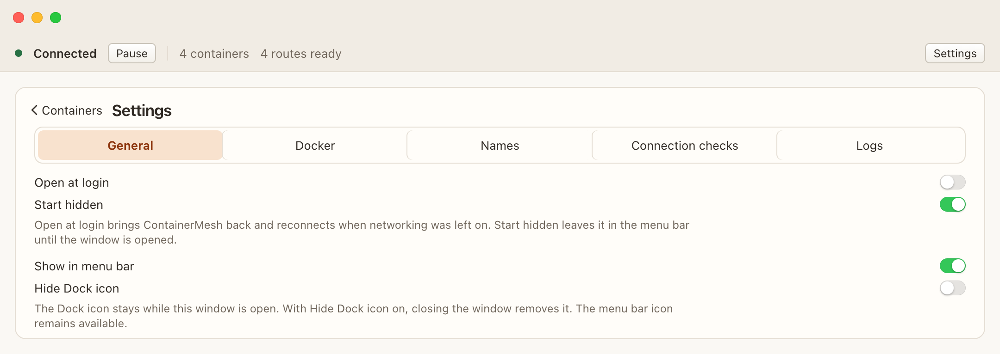

Settings
Settings are for the macOS user who is logged in. The app menu and the menu bar both open them. General, Docker, Names, Connection checks, and Logs are separate panes.

General
- Open at login brings ContainerMesh back and reconnects when networking was left on.
- Start hidden leaves a login launch in the menu bar until you open the window. It is on by default. It does nothing when the menu bar icon is off, and it does not hide an ordinary launch from the Finder or Dock.
- Show in menu bar and Hide Dock icon keep at least one way to open the app. The Dock icon stays while the window is open. With Hide Dock icon on, closing the window removes it, and the menu bar icon remains.
If macOS asks, allow ContainerMesh in System Settings, under General, Login Items.
Docker
This is the Docker context ContainerMesh uses. The usual Docker Desktop context is desktop-linux. Changing the context reconnects. ContainerMesh does not change your global Docker context.
Names
The default domain and Include Compose stack in hostname live here. An example of the current form is shown beside the switch. See Names.
Connection checks and logs
Connection checks lists the prerequisite results. Logs are for this run of the app. They stay in memory until you quit, and Docker errors may include local paths. Read a log before you put any of it in a public bug report.